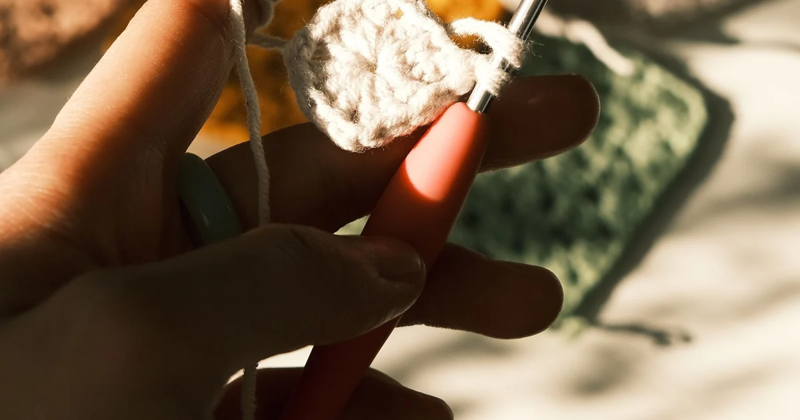
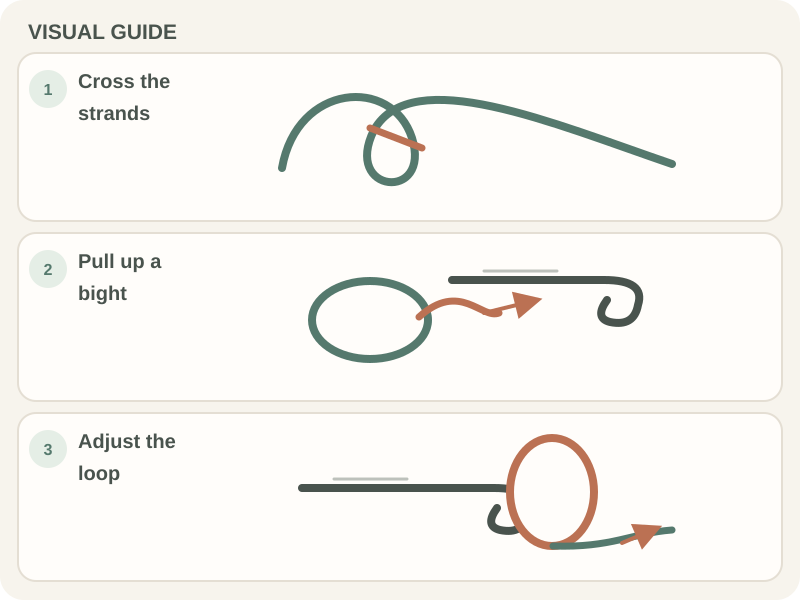

Crochet Basics · Beginner guide
How to Make a Slip Knot for Crochet
Make an adjustable starter loop that stays on the hook while leaving room for the first chain.

A slip knot is the adjustable loop that begins many crochet projects. Its knot sits below the hook; the loop on the hook is not itself a chain stitch.
Before you begin
Use the strand attached to the ball as the working yarn and the loose end as the tail. The crossing method can vary, so focus on which strand makes the adjustable loop.
Step-by-step instructions
- Cross the tail over the working strand to form a loop, leaving a tail you can secure later.
- At the crossing, pull a folded section of the working strand through the loop to make a new loop.
- Place the new loop on the hook and hold both yarn ends below it.
- Ease the knot closed until the loop stays on the shaft but slides along it.

What to check
Check the loop, not the knot
Move the loop along the shaft. It should travel without force, and the knot should remain below the hook head. If it locks, undo it and begin with a larger loop.
Frequently asked questions
Does the slip knot count as a chain?
Usually not. Count the chain stitches made after the loop is on the hook, unless a pattern says otherwise.
Which end do I pull to adjust it?
The working yarn and tail affect different parts of the knot. Hold both and gently ease the loop rather than yanking one end.
What makes the loop adjustable
A slip knot has a knot below the hook and a loop around the hook shaft. Pulling the working yarn generally changes the loop around the hook, while pulling the tail changes the knot's position and size. The two strands have different jobs: the working yarn connects to the ball and feeds future stitches; the tail is the cut end that will eventually be secured. Knowing which strand is which matters when the loop refuses to move. A slip knot should hold the yarn on the hook without becoming a hard lump that blocks the next stitch.
Form a bight through the crossing
One common method starts by crossing the tail over the working strand to make a loop. At the crossing, use the hook or your fingers to pull a folded section of the working yarn through. That folded section is sometimes called a bight. Put the new loop on the hook, then ease the original crossing below it. The exact direction of the crossing can vary between demonstrations; what matters is that the loop on the hook can be adjusted by the working strand. If the strands are difficult to distinguish, lay them on a table before picking up the hook.
Size the loop for the shaft
Slide the new loop onto the hook shaft, the straight section behind the head. Gently draw the working strand to snug it. The loop should stay on the hook while you move the hook, but it should still travel along the shaft with light pressure. Do not pull it into the narrow throat or tighten it until the yarn compresses. A loop that is too loose may slip off during the next yarn-over; one that is too tight can make the first chain difficult to form. Adjust gradually rather than pulling sharply on one strand.
Check the knot before making chains
Hold the tail and working yarn below the hook and move the loop forward and back. The loop should change size without the whole knot sliding up over the hook head. If the knot tightens into a fixed ring, undo it and remake the crossing; pulling harder will not make a locked knot adjustable. If the loop slides off, snug it slightly. For slippery yarn, keep the hook steady while you test. Do not tie an extra knot to compensate; the foundation chain and later finishing method should follow the project instructions.
Recognize why the first chain is confusing
The slip-knot loop is active on the hook, not a completed chain stitch. When you yarn over and draw through it, the loop you pull through creates the first chain link below the hook. This distinction affects stitch counts: patterns typically specify the number of chains after the slip knot, not including the loop or knot. Keep the chain links visible as you work. If you count the active loop, your foundation chain will come out one link short when you start the first row.
Try a different setup for difficult yarn
Fuzzy or dark yarn can hide the crossing and make it hard to see which strand is being pulled. A smooth, lighter yarn can make practice clearer. If the yarn splits as you pull a bight through, use the hook tip to catch the whole strand rather than one ply. Some patterns or makers use a loop start instead of a slip knot, but that is a different starting method and is not interchangeable in every project. Follow the pattern's ring or foundation instructions when they specify a particular start.
Takeaway: one movable loop, one secure start
A useful slip knot leaves a loop that moves on the shaft and a knot that sits below it. Identify the ball-connected working strand, pull a bight through the crossing, and adjust without forcing the yarn. Then count only the chain links you make after the loop is on the hook. If you can move the loop and make the first chain without fighting the hook, continue with the foundation-chain instructions. If it locks, slips off, or forms a bulky knot, undoing it now is quicker than carrying the problem into the first row.